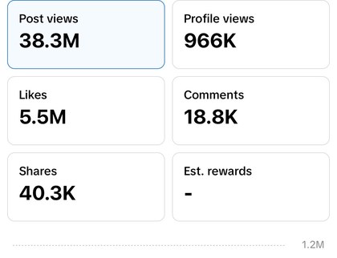
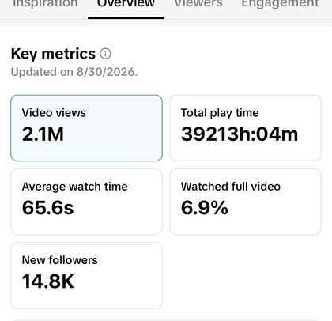

Grow your audience with vlogs people actually want to watch
Learn how to turn your real life into engaging vlogs — from finding the story and capturing the right moments to editing, voiceover and understanding what makes people keep watching.
Registration closes September 21.
Make better vlogs. Build a better foundation for growing an audience.
Your life isn't boring. You just need to know how to tell the story.
A lot of people want to vlog.
They record their day. They collect footage. They edit it. They post it.
And then wonder why nobody seems interested.
The problem usually isn't that their life is boring.
It's that they haven't learned what to film, what to leave out, how to find the story, or how to turn ordinary moments into something people actually want to watch.
Vlogging isn't simply recording your life. It's telling a personal story through moments captured from real life.
That's what this course teaches.
You'll learn the process I've developed through years of making vlogs — from figuring out what to film to turning the footage into a story.
40M+ views. Here's the work behind the number.
My vlogs have been watched more than 40 million times, and I was named Vlogger of the Year at the 2024 Social Media Awards. Rather than just tell you that, here are the numbers.
post views in twelve months
Plus 5.5M likes and 40.3K shares. TikTok, Aug 2025–Aug 2026.

Screenshot,
TikTok Studio
· 365 days
average watch time on a four-minute vlog
That vlog: 2.1M views and 14.8K new followers from one video.

Screenshot,
TikTok Studio
· one post
Six weeks. Six modules. A practical system for making better vlogs.
Understand what a vlog actually is.
Learn what makes a vlog different from other forms of video, what makes one engaging, and develop the mindset you need to start creating.
Know what to vlog and find the story before you start filming.
Learn how to find stories in your everyday life, follow the action and decide what is actually worth capturing.
Capture the moments that matter.
Learn what to shoot, how to frame your shots and how to capture the moments that actually help tell your story.
You can start with the equipment you already have.
Turn your footage into a story people want to finish.
Learn how to follow the action, build a strong opening, cut aggressively and remove everything that doesn't need to be there.
Don't tell people what they can already see.
Learn how to use voiceover to add context, personality, opinions and emotion to your footage.
Publish your vlogs strategically and learn from what happens next.
Learn how to package and post your vlogs, understand your audience and use what you learn from each video to make the next one better.
You won't just watch the course. You'll actually do it.
This isn't a course you'll buy, watch for two days and forget about. The course runs over six weeks.
A new module is released.
Work through the lessons and learn that week's skill.
You put it into practice.
Take what you've learned and actually use it to make better vlogs.
We meet for a live Q&A.
Join a one-hour live call with Gilbert where questions are answered based on that week's module. You can ask about the lessons, your own creative decisions, problems you're running into, or anything you don't understand.
The goal is simple: learn something. Try it. Get stuck. Ask questions. Get unstuck. Move on to the next thing.

You probably know him as Gillian Baci.
His name is Gilbert Bassey, and he's the person behind the Gillian Baci vlogging persona.
His vlogs have been watched more than 40 million times, and he was named Vlogger of the Year at the 2024 Social Media Awards.
He's also an author and filmmaker. His first novel, A Decent Man, has a 4.29/5 rating on Goodreads. His short film Ananze and the Zipman is streaming on Amazon Prime. He studied filmmaking at the New York Film Academy.
This course brings those experiences together: the practical knowledge of making vlogs people watch, and the storytelling principles behind compelling video.
Join the First Cohort →This is for you if you've ever thought:
"I want to vlog, but I don't know what to film."
"I have footage, but I don't know how to make it interesting."
"My life isn't particularly exciting. What would I even vlog?"
"I want to make better videos, but I don't want to spend a fortune on equipment."
"I've started making vlogs, but I don't really understand why some work and others don't."
You don't need:
You just need something you want to say, show or share — and a willingness to learn.
Join the first cohort for ₦15,000.
Early-bird price until September 7. Regular price: ₦20,000.
Join the First CohortAfter September 7, the price is ₦20,000.
Registration closes September 21.
The cohort begins September 29.
Frequently asked questions
When does the course start?+
The first cohort begins on September 29, 2026.
How long is the course?+
The course runs for six weeks, with one module released each week.
What happens during the live sessions?+
Every week there is a one-hour live Q&A with Gilbert focused on that week's module. You can ask questions about the lessons, things you're struggling with, or how to apply what you've learned to your own vlogs.
What if I miss a live Q&A?+
The recorded course lessons remain available to you for life. Attending the live calls is encouraged — that's where you get to bring your specific questions to Gilbert directly.
Do I need an expensive camera?+
No. You can start with your phone. The course focuses on the principles and techniques that make a vlog engaging rather than requiring expensive equipment.
Is this course for beginners?+
Yes. You don't need previous filmmaking or vlogging experience.
Do I need to have a following?+
No. The course is designed to teach you how to make better vlogs. You don't need an existing audience to join.
Do I need to know how to edit?+
No. The course includes a module on editing and is designed to take you through the process.
How much time do I need each week?+
The course is designed to be practical, so you'll need enough time to watch the week's lessons and actually practise what you're learning. The exact time commitment will depend on how quickly you work through the material and how much you choose to create.
Can I join if I'm outside Nigeria?+
Yes. The course is online, so you can participate from anywhere with a reliable internet connection.
Ready to upgrade your vlogging?
The first cohort begins September 29.
Join the First Cohort